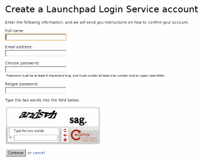
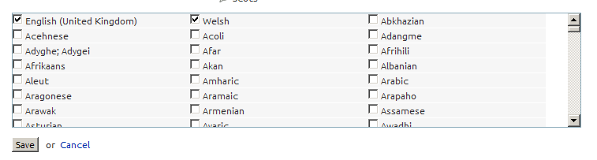
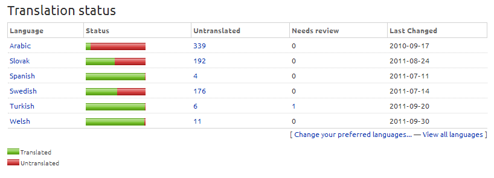
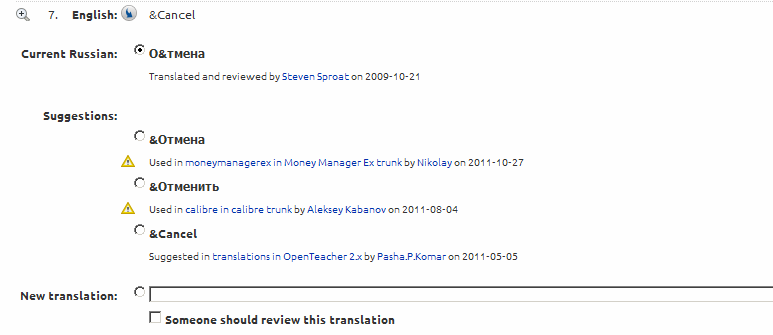

Whyteboard: Help Translate
Whyteboard can be run in over 20 languages thanks to the many translation contributions received
by the online community at Launchpad. You can help to translate, too.
How to translate
- Create a Launchpad account. This allows you to receive credit in the translators list.

- Set your preferred languages. You can then translate Whyteboard into these languages

- Go to Whyteboard Translations at Launchpad and click the language you intend to help with. Your preferred languages are displayed initially, but you can view all languages and translate that.

- The translation interface is shown - each English message with a corresponding box to type the translation. As you can see, Launchpad will offer suggestions if the English message has been used in other software.

- When translating, keep codes such as
%s, %i and %d intact - these have special meaning in the program.
- The & symbols you see, e.g.
&File and &Edit are used as Keyboard Access keys.
- Try to Capitalize Menu Items and to use good grammar throughout.
- Your contribution will be added to the next release of Whyteboard and your name added to the credits!
- Learn more about translation support on Launchpad.
Back to home page